Seven Steps
Introduction et Synopsis
https://vimeo.com/131563308 (mot de passe: sevensteps)
Seven Steps est mon film de fin d’étude de l’Ecole Nationale Supérieure des Arts Décoratifs, réalisé en 2015.
Technique : animation Adobe After Effect, décors Adobe Photoshop
Musique : Alexis Ciesla
Sound design: Florian Bardoux
David, un alpiniste de haute montagne, s’attaque à un sommet qu’il rêve de conquérir. A travers son ascension, il devra faire preuve d’humilité et de sagesse, mais la montagne ne pardonne aucune erreur.
Note d’intention
Inspirée des histoires de grimpeurs des hauts sommets du monde tels que l’Everest, cette traversée mystique a pour but d’explorer les limites de l’ego et de la finalité de l’homme face à l’insécurité et l’infinité de la montagne. Quittant peu à peu la réalité de la marche vers le sommet pour une ascension sensorielle et contemplative, c’est l’histoire de l’homme face à la montagne, l’homme face à lui-même puis l’homme face à la mort.
Film muet, la musique (composée et interprétée par Alexis Ciesla) et le silence se partagent et se disputent la scène comme David et la montagne se confrontent et s’enlacent. Comme un personnage à part entière, la montagne s’exprime à travers les éléments, ou bien en restant impassible et éternellement stoïque comme la plus imposante des divinités, une divinité qui donne beaucoup à ceux qui l’aiment mais qui peut aussi les dévorer. C’est en se trouvant face à cette réalité que David est amené à faire une série de choix qui le mettront face à lui-même et à la mort, celle des autres hommes puis à la sienne. Mais au-delà de la mort, David sera amené à se resituer face à la nature, et y trouver une grande beauté dans le moment le plus critique.
Recherches Graphiques
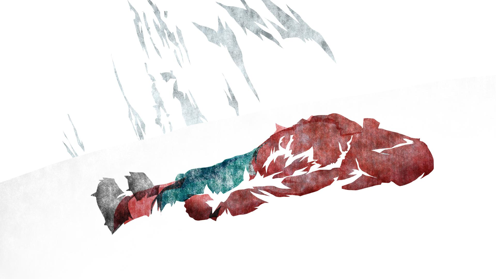
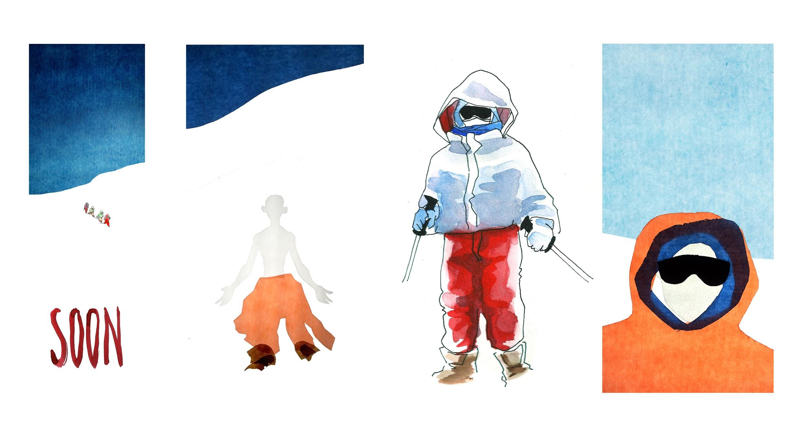
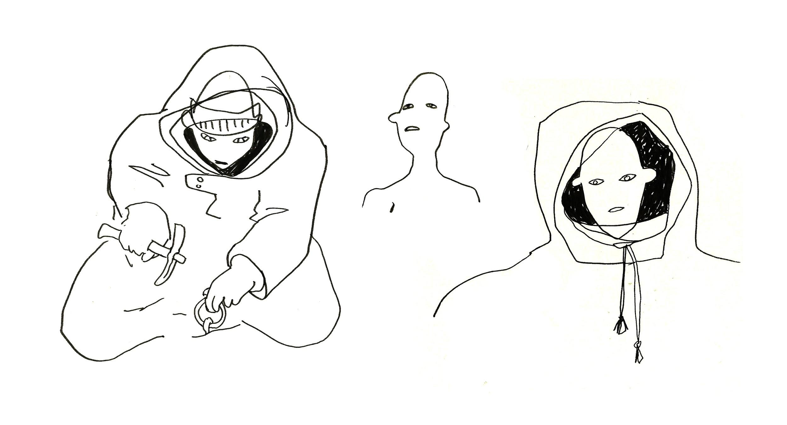
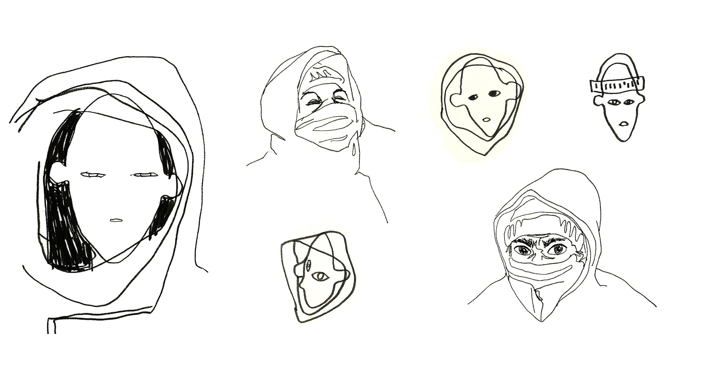
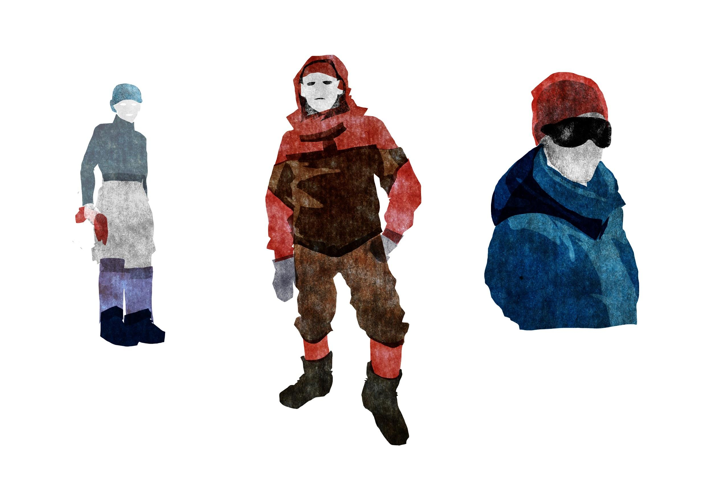
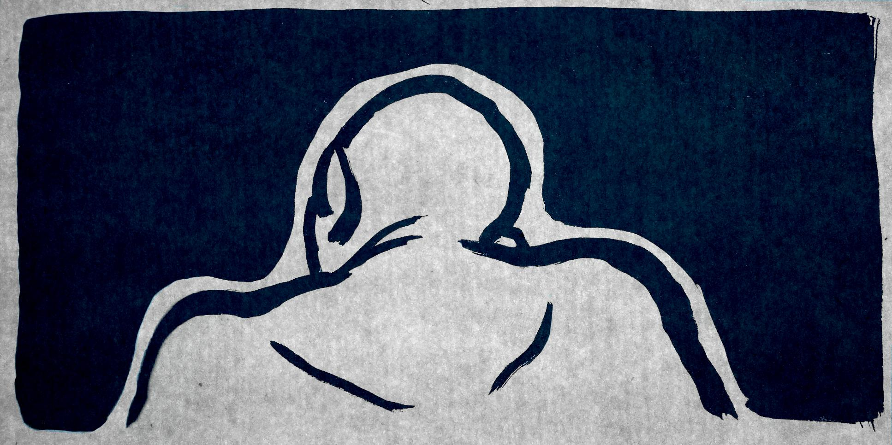
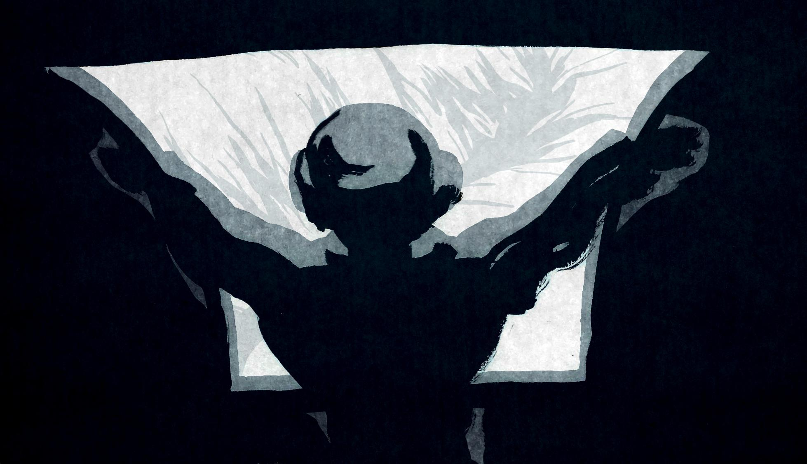
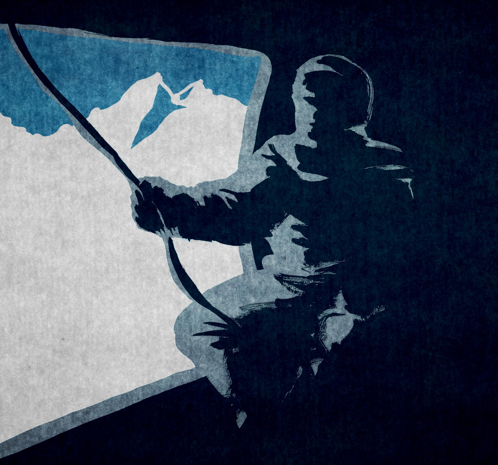
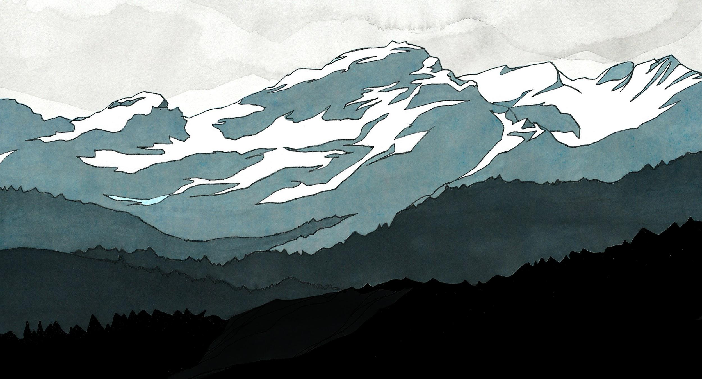
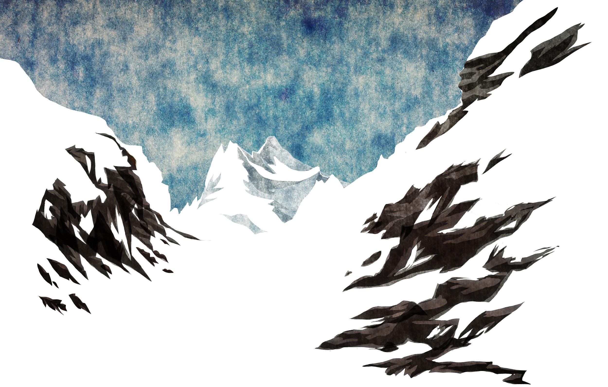
Screenshots du film
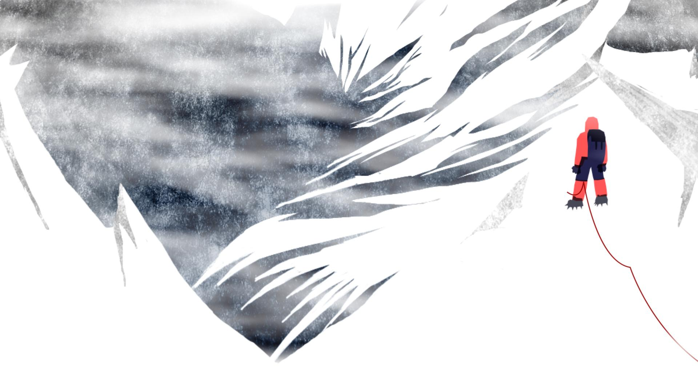
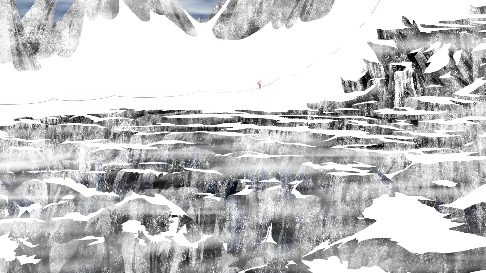
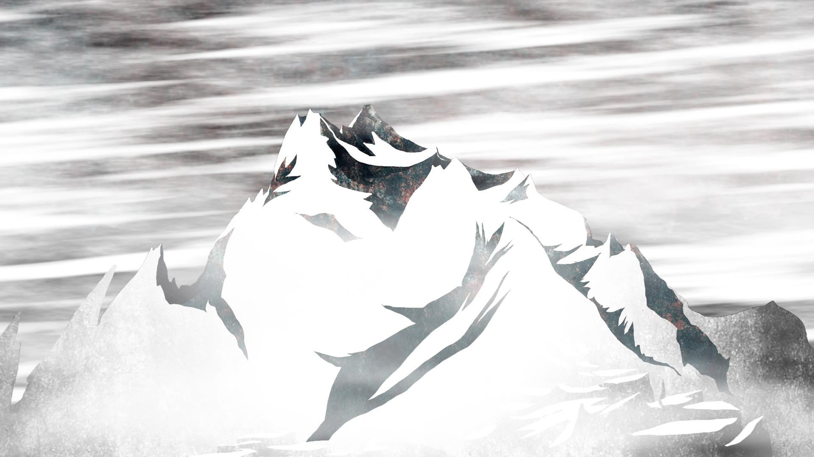
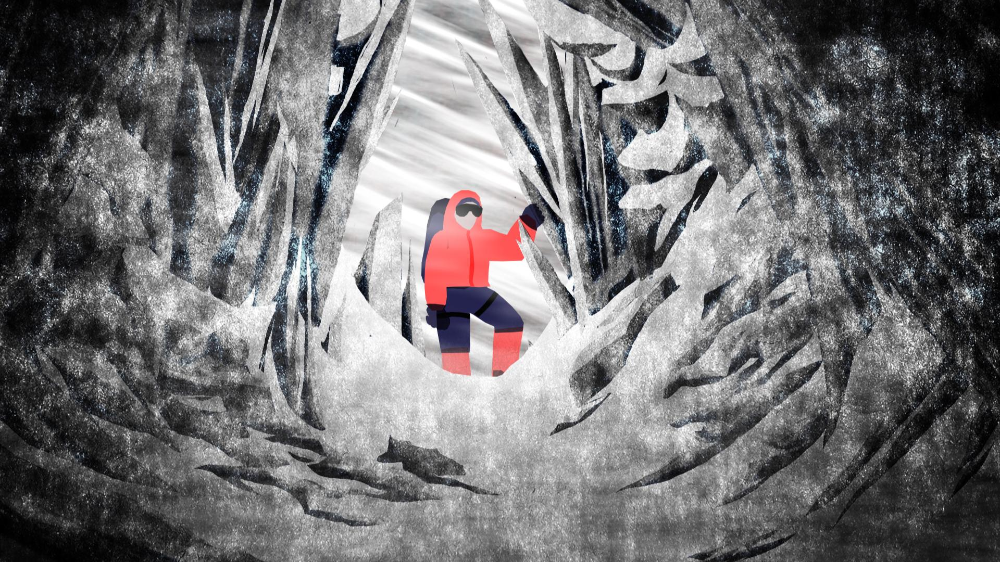
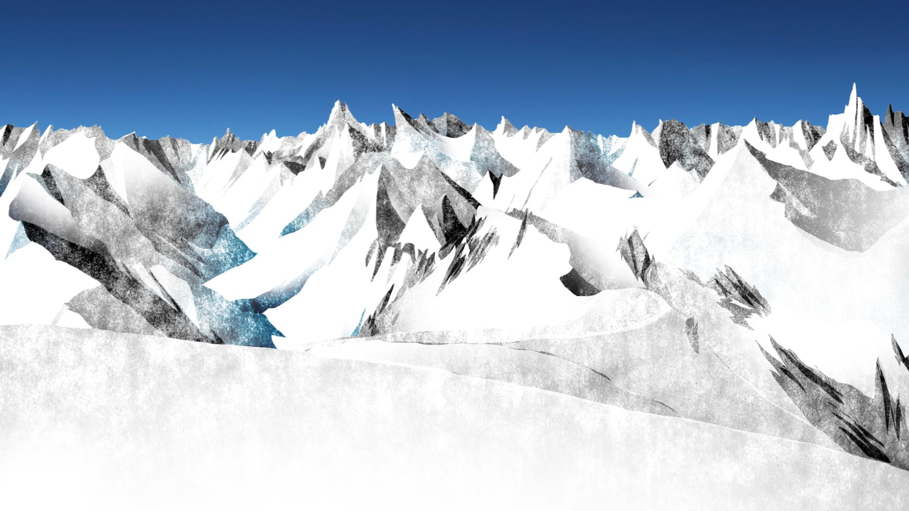
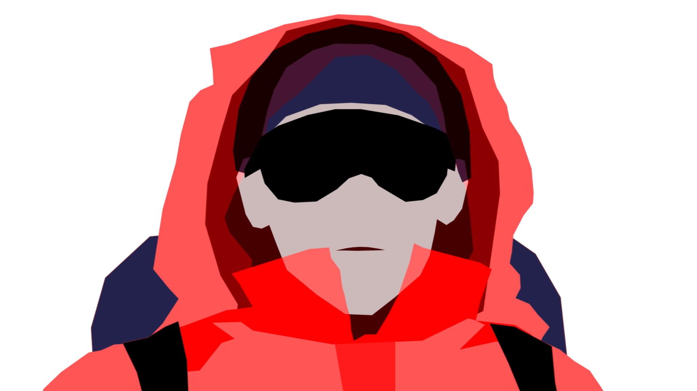
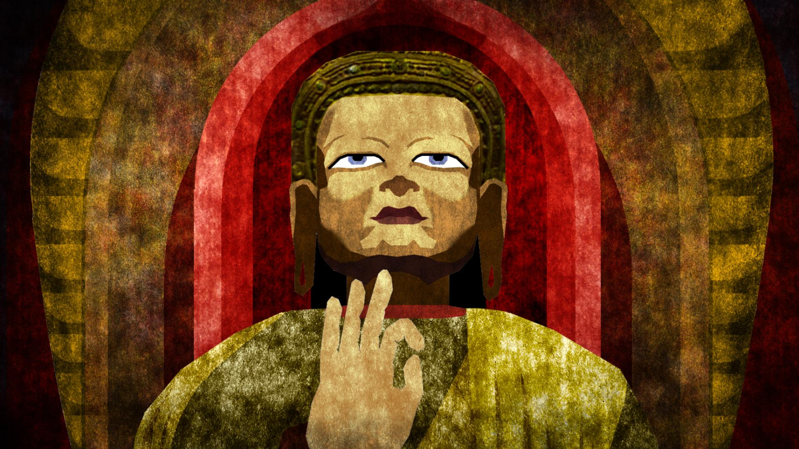